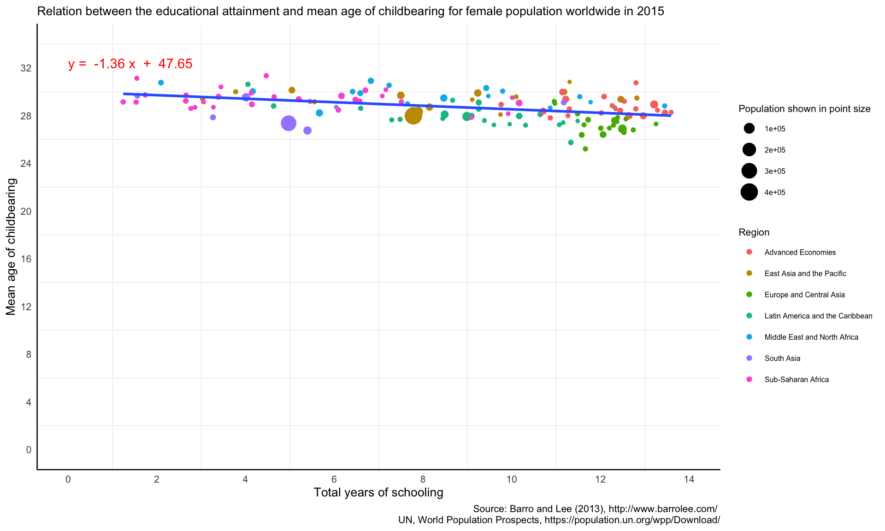
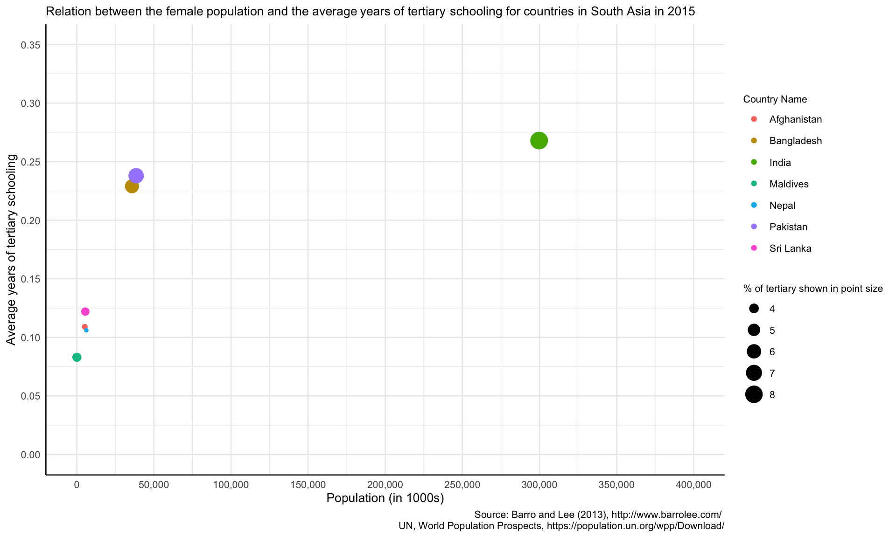
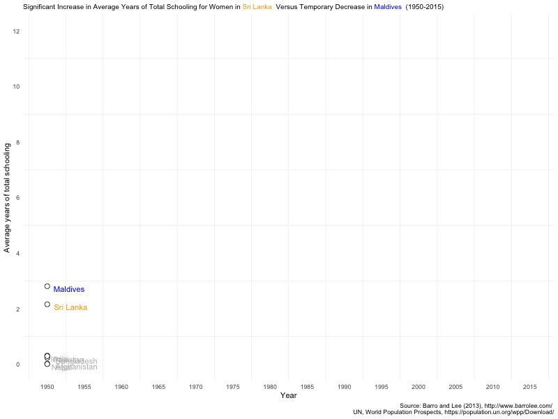
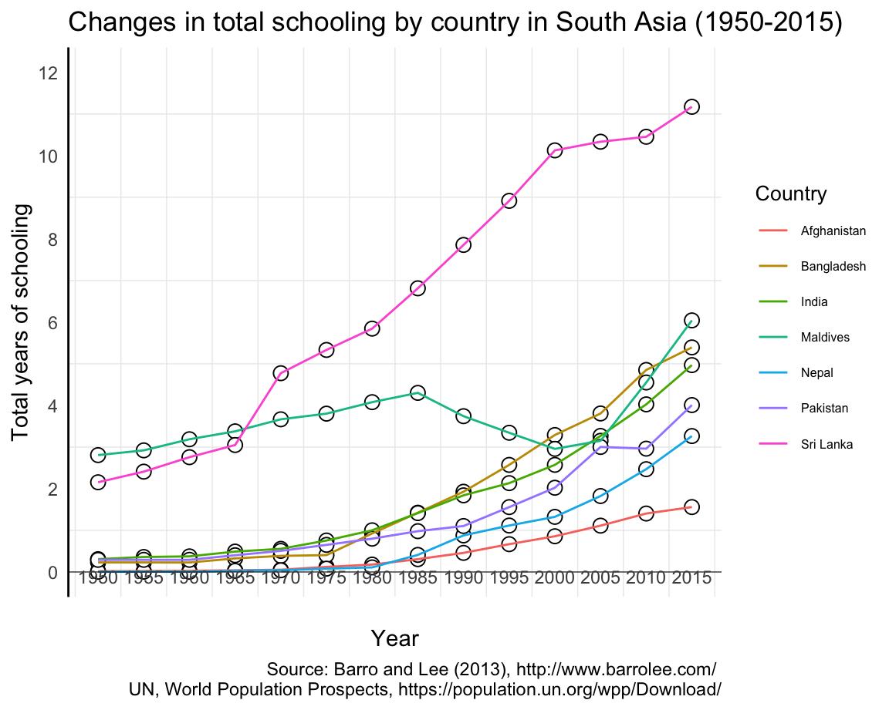
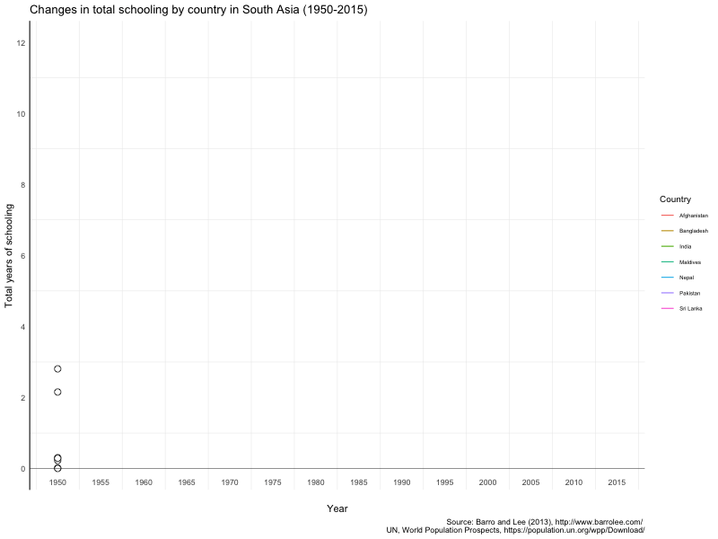
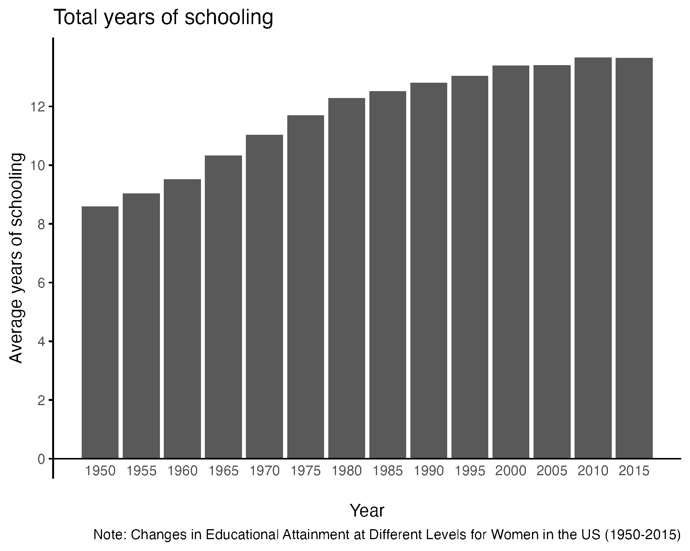

Exploring the patterns of women’s educational attainment and childbearing and their relationship is crucial for understanding broader societal dynamics and promoting gender equality. Education empowers women with knowledge, skills, and the confidence to make informed decisions about their lives, including family planning and career choices. Higher levels of education often correlate with later ages of marriage and childbearing, smaller family sizes, and improved maternal and child health outcomes. This, in turn, contributes to better economic prospects for women and their families, reduces poverty, and promotes sustainable development. Moreover, understanding these patterns helps policymakers and stakeholders design more effective educational and health programs that address the unique needs of women across different cultures and societies. By investing in women’s education, societies can break cycles of poverty, improve quality of life, and foster environments where gender equality can thrive.
Description of Data and Source
The data I used for this final project come from two datasets. The first one is the Barro-Lee dataset reported in Barro and Lee (2013), including 2,044 observations on 20 variables. The data reflect Barro-Lee estimates of educational attainment for the female population aged 25-64 years from 1950 to 2015. This dataset is publicly available from the website: http://www.barrolee.com/. More information related to the detailed data sources and missing observations estimation were described in the original paper. Another dataset is the United Nations World Population Prospects (2022) dataset available from https://population.un.org/wpp/Download/, which has 20,596 observations on 65 variables including the one of interest Mean Age Childbearing (years) from 1950 to 2100. In order to answer the research questions of this project, I extracted data of Mean Age Childbearing (years) in 1950-2015 and joined it to the Barro-Lee dataset.
Research Questions
This project focuses on four questions:
What is the relationship between the mean age of first childbearing and the average total years of schooling among the female population across different countries between 1950 and 2015?
How has the relationship between the population and the average years of tertiary education for women in South Asian countries changed from 1950 to 2015?
What is the trend in the total years of schooling for women in South Asian countries from 1950 to 2015?
How has the total years of schooling at different educational levels for women in the US evolved from 1950 to 2015?
| Characteristic | N = 1,8621 |
|---|---|
| No formal education | 38(35) |
| Primary as highest level | 31(23) |
| Primary completed | 16(15) |
| Secondary as highest level | 24(22) |
| Secondary completed | 14(16) |
| Tertiary as highest level | 7(11) |
| Tertiary completed | 4.6(6.7) |
| Average years of total schooling | 5.1(3.7) |
| Average years of primary schooling | 3.30(2.16) |
| Average years of secondary schooling | 1.61(1.64) |
| Average years of tertiary schooling | 0.24(0.34) |
| female population (in 1000s) | 6,775(26,578) |
| Mean age of first childbearing | 28.72(1.15) |
| 1 Mean(SD) | |
In this combined dataset, there are 1,862 observations for 23 variables. Based on the information from Table 1, the average global female population in 1950-2015 was 6.775million. Between the age of 28-29 years (Mean = 28.72, SD = 1.15), the female would have their first child. As for educational attainment, 38% of the global female population didn’t receive formal education in 1950-2015. Meanwhile, across all countries within the sample, 31% of the female population had primary school as their highest level of schooling, while 16% had it completed. Twenty four percent of the sample had secondary school as their highest level, while 14% completed it. Only 7% entered tertiary level of schooling, and only 4.6% had it finished. The average years of total schooling of female population were 5.1 years (SD = 3.7) across the world in 1950-2015, while the average years of primary level were 3.3 years (SD = 2.16), along with 1.61 years (SD = 1.64) for the secondary level and 0.24 years (SD = 0.34) for the tertiary level. Besides, in this sample, 17% of countries belong to the group of Advanced Economies, 12% as East Asia and the Pacific, 14% as Europe and Central Asia, 17% as Latin America and the Caribbean, 13% as Middle East and North Africa, 5.3% as South Asia, and 23% as Sub-Saharan Africa.





